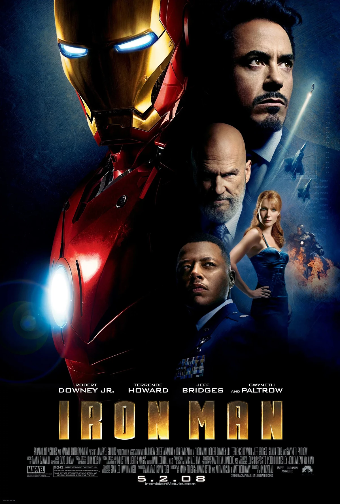
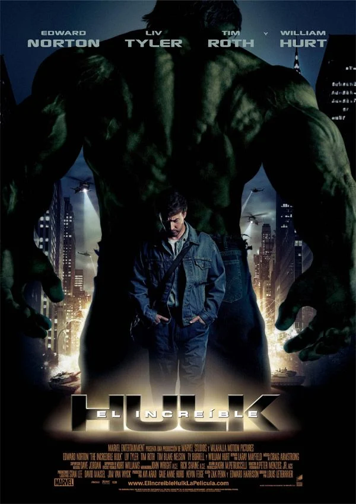
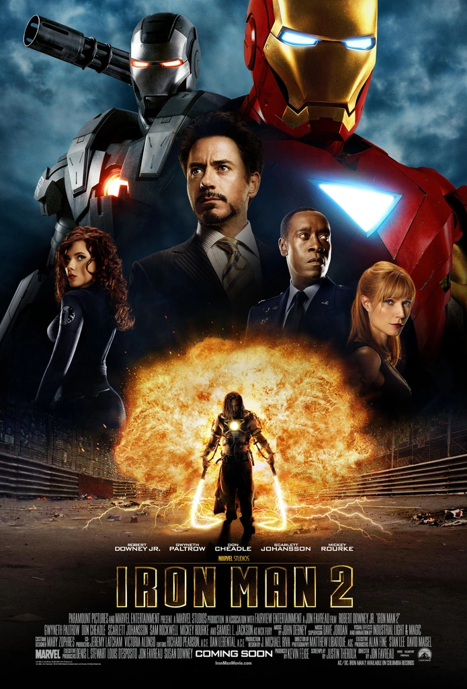
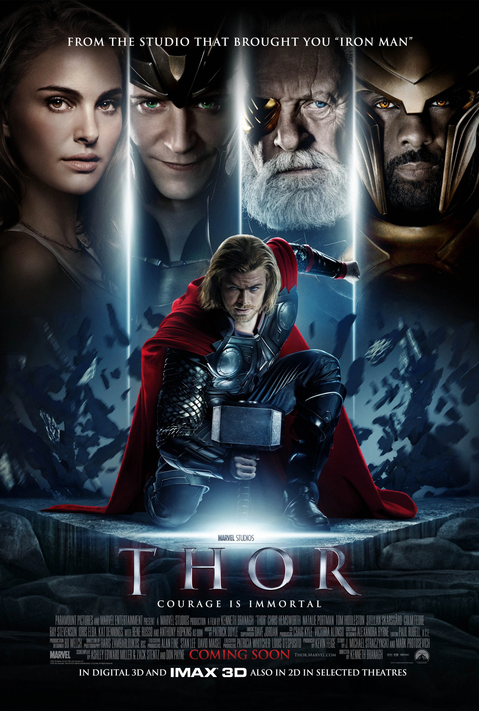
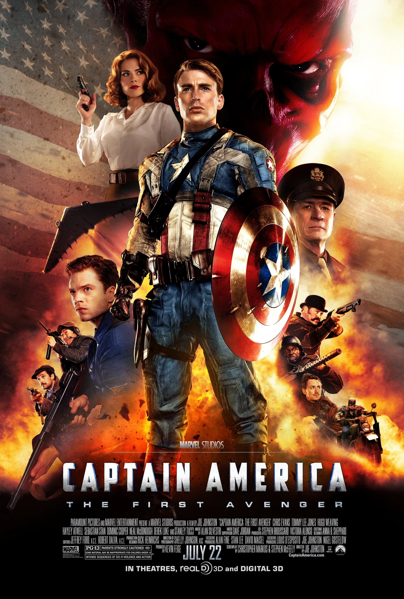
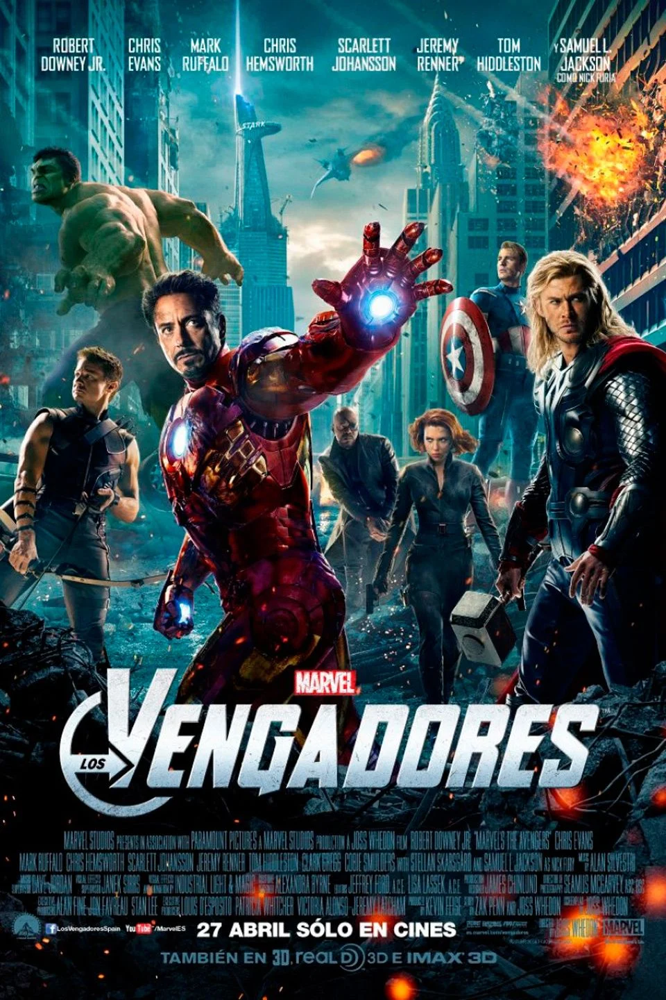

Iron Man (2008)
La película que inició el Universo Cinematográfico de Marvel nos presenta a Tony Stark (Robert Downey Jr.), un genio inventor y playboy multimillonario que es secuestrado en Afganistán. Forzado a construir un arma destructiva, en su lugar crea una armadura tecnológica para escapar. Tras su regreso, perfecciona el diseño y se convierte en Iron Man, marcando el nacimiento del primer superhéroe público de este universo. Dirigida por Jon Favreau, estableció el tono característico del UCM: acción, humor y personajes carismáticos.
Dato clave: La escena post-créditos con Nick Fury introdujo el concepto de un universo compartido.
El Increíble Hulk (2008)
Protagonizada por Edward Norton como Bruce Banner, esta película explora la lucha del científico contra su alter ego, el monstruoso Hulk. Ambientada principalmente en Brasil, Banner busca desesperadamente una cura para su condición mientras es perseguido por el general Thunderbolt Ross (William Hurt). La película combina elementos del thriller con acción espectacular, mostrando una batalla final en Harlem contra el Abominación. Aunque menos conectada al UCM que otras entregas, incluye cameos de Tony Stark y referencia a Super Soldier Serum.
Dato clave: Mark Ruffalo reemplazaría a Norton como Hulk en películas posteriores.
Iron Man 2 (2010)
Secuela que profundiza en los desafíos de Tony Stark como Iron Man. Mientras el gobierno intenta confiscar su tecnología, Stark enfrenta problemas de salud por el reactor arc en su pecho. Simultáneamente, el empresario rival Justin Hammer (Sam Rockwell) y el vengativo Ivan Vanko (Mickey Rourke) conspiran contra él. Introduciendo nuevos personajes clave como Natasha Romanoff/Black Widow (Scarlett Johansson) y Nick Fury (Samuel L. Jackson), la película expande significativamente el universo Marvel.
Dato clave: Presenta el primer vistazo del Capitán América a través del escudo en el taller de Stark.
Thor (2011)
Dirigida por Kenneth Branagh, lleva la mitología nórdica al UCM. Thor (Chris Hemsworth), el arrogante príncipe de Asgard, es desterrado a la Tierra por su padre Odin (Anthony Hopkins) tras desatar una guerra. Sin sus poderes, debe aprender humildad con la ayuda de la científica Jane Foster (Natalie Portman). Mientras tanto, su hermano Loki (Tom Hiddleston) urde planes en Asgard. La película equilibra magistralmente el drama shakesperiano familiar con el romance terrenal y la acción superheroica.
Dato clave: Presenta el Teseracto, que sería crucial en Los Vengadores.
Capitán América: El Primer Vengador (2011)
Ambientada en la Segunda Guerra Mundial, sigue la transformación de Steve Rogers (Chris Evans) de joven débil en supersoldado gracias al suero del Dr. Erskine. Luchando contra la organización Hydra liderada por el Cráneo Rojo (Hugo Weaving), el Capitán América se convierte en un símbolo de libertad. La película destaca por su estética retro y emocionantes secuencias de acción, mientras establece importantes elementos para el UCM, incluyendo el Cubo Cósmico. El emotivo final prepara el terreno para su aparición en Los Vengadores.
Dato clave: La escena final muestra a Cap despertando en el presente, 70 años después.
Los Vengadores (2012)
El épico crossover dirigido por Joss Whedon reúne a Iron Man, Capitán América, Thor, Hulk (ahora interpretado por Mark Ruffalo), Black Widow y Hawkeye (Jeremy Renner) contra Loki y su ejército alienígena. La película maestramente equilibra sus múltiples protagonistas, ofreciendo momentos icónicos como la batalla de Nueva York y el plano secuencia de los Vengadores en círculo. Con diálogos memorables y acción espectacular, demostró el potencial del universo compartido y se convirtió en la tercera película más taquillera de su tiempo.
Dato clave: Primera aparición de Thanos en los créditos, sembrando la semilla para Infinity War.